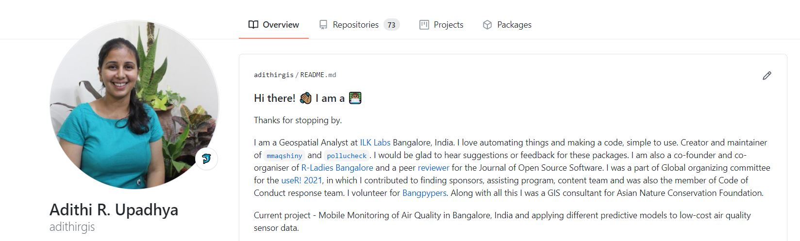
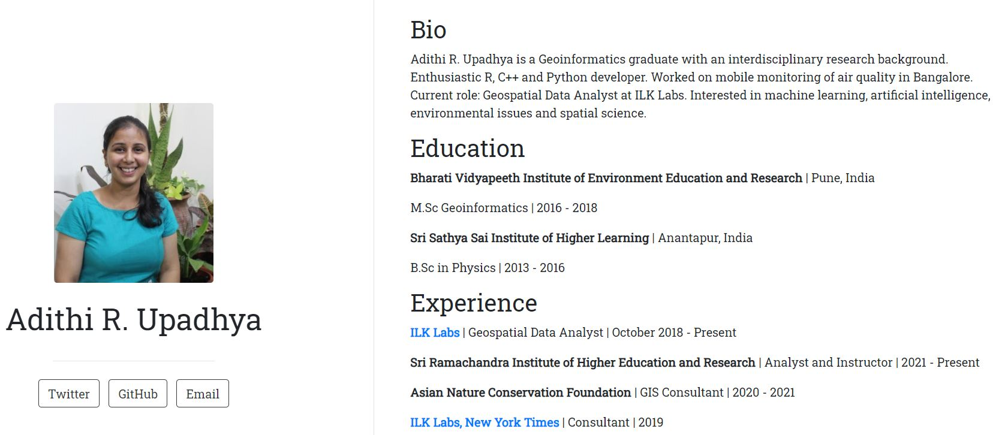
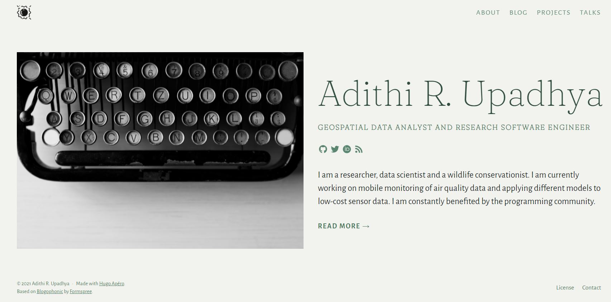

Why and how website(s)?
Wondering if you would need a website ever, read through.
By Adithi R. Upadhya in R Website
August 15, 2021
I have been wanting to make a personal website forever, but I am also a person who is super bad with colour combinations, beautification of stuff. So I kept pushing this, till I stumbled on Dr. Silvia CanelÛn’s website. I directly contacted her and she was very nice and sweet to help me out throughout this. This website has been heavily inspired by Silvia’s.
Why website(s)
So, in the beginning of this year (2021), I was got selected for the rstudio::global(2021) Diversity Scholarship to attend two workshops. This year we had two amazing educators Dr. Mine «etinkaya-Rundel and Dr. Alison Hill.

Now the first thing that came to mind while making personal websites was do I really need one? Or why would anyone need a personal website? Then I remembered that a few people who worked with me always recommended that I should I have a website, and even I kept telling myself the same thing. Website could be a collection of your work and blogs to share with others. So, if you work (any kind of work) or you like to blog, then you should definitely have a website. I had another strong reason to make my own website, which is I get a chance to work with R! I already had a website, but had very less content.
Reiterating that I have been a benefactor of kind communities I wanted to communicate my research struggles, learning in a systematic manner. So here is one of the outcomes of this journey.
How website(s)
During the Diversity Scholar workshops we were encouraged to have our own website, check the materials here. Alison’s workshop had three ways to have your own website. There are many many ways, but here I discuss in brief only three. I won’t be discussing much on building websites in blogdown as there are more informative articles / resources published, but I will try my best to add links to all the resources here.
First Method
Though this is not exactly a website, but this could definitely be used to write a short bio of yourself.
Level : Everyone who owns a GitHub account.
Requirements : Github account, your photo.
If you are not familiar with GitHub, I highly recommend using it. If you use R everyday then try Happy Git with R.
Number of minutes I took to complete it : 15
Procedure :
-
Create a new repository which has the same name as your username, eg: my user name in GitHub is adithirgis, so I will make a repo which I name as adithirgis.
-
Initialize the repo with a README.md, this is where you will write things.
-
This is a special repository, you can customize your repo.
-
You can add pictures, emoji’s to this md file.
-
And definitely commit and push all the changes.
-
Example shown below of how it could look like.

Detailed Resources :
- This is an awesome collection of variety of profiles, the links to the repo are also given - https://github.com/abhisheknaiidu/awesome-github-profile-readme.
Second Method
Level : Everyone who uses R.
Requirements : R, RStudio, rmarkdown package, Netlify, postcards package, your photo.
Number of minutes I took to complete it : 35
Procedure :
-
Open RStudio and install postcards package as shown below.
-
There are multiple templates available in postcard package. Choose one of them.
require(remotes)
remotes::install_github("seankross/postcards@main")
postcards::create_postcard(template = "trestles")
-
An
index.Rmdfile will be generated, customize it and knit it. -
Example shown below of how it could look like.

Detailed Resources :
- Here is the repo of this package and many other examples - https://github.com/seankross/postcards#getting-started.
Third Method
I won’t be discussing how to build the website from scratch as it has been beautifully and correctly done here. Alison had introduced this theme called Hugo Ap√©ro and I was blown away by the beauty. It was work in progress back then and was supposed to be released soon. I was super happy because for a person who barely understands colour combination and art, this would be of great help.
Level : Everyone who uses R, GitHub and is interested to learn more.
Requirements : R, RStudio, rmarkdown package, Netlify, GitHub, blogdown package, your photo, one icon and many other photos.
Number of minutes I took to complete it : 720 (don’t worry you wont take so much of time)
Procedure :
-
You can convert your current Hugo Academic website to Hugo Apéro using this amazing blog.
-
Open RStudio and install blogdown package and download Hugo Apéro theme as shown below.
require(blogdown)
blogdown::install_hugo()
new_site(theme = "hugo-apero/hugo-apero", format = "toml", sample = FALSE,
empty_dirs = TRUE)
# View the site
blogdown::serve_site()
# Stop the site
# blogdown::stop_server()
-
Please use this website to go through and customize your website.
-
Upload it on GitHub and commit changes.
-
Deploy on Netlify.
-
I downloaded all the images from rawpixel, a free resource for images recommended by Meenakshi Kushwaha.
-
And the icon which I use is called the glowing sun downloaded as
.pngfrom Icons8 and converted to.icousing Favicon.io as recommended by Silvia. -
All favicons can be be used from here.
-
If you want to know how to make your website more accessible, I highly recommend checking this series.
-
Example shown below of how it could look like.

- You can as well fork this repo from here.
Detailed Resources :
-
Everything about Hugo Apéro - https://hugo-apero-docs.netlify.app/about/
-
Here is a walk through video - https://www.youtube.com/watch?v=RksaNh5Ywbo.
-
Alison Hill’s rstudio::global(2021) workshop Introduce yourself online GitHub repo - https://github.com/hugo-apero/iyo-rstudio-global
-
Alison Hill’s personal Hugo website - https://alison.rbind.io/.
-
Silvia’s personal website - https://silvia.rbind.io/
-
Other example websites - https://hugo-apero-docs.netlify.app/project/
I think I have not mentioned it enough THANK YOU Blogdown and Netlify for providing this support for free. I really appreciate it.
If you find any mistakes or have tips to improve this or if you found anything helpful, please drop in a message using contact form, I built this website using the tutorial mentioned, with minimal errors. In the end, a huge shout out to Alison Hill and Silvia.